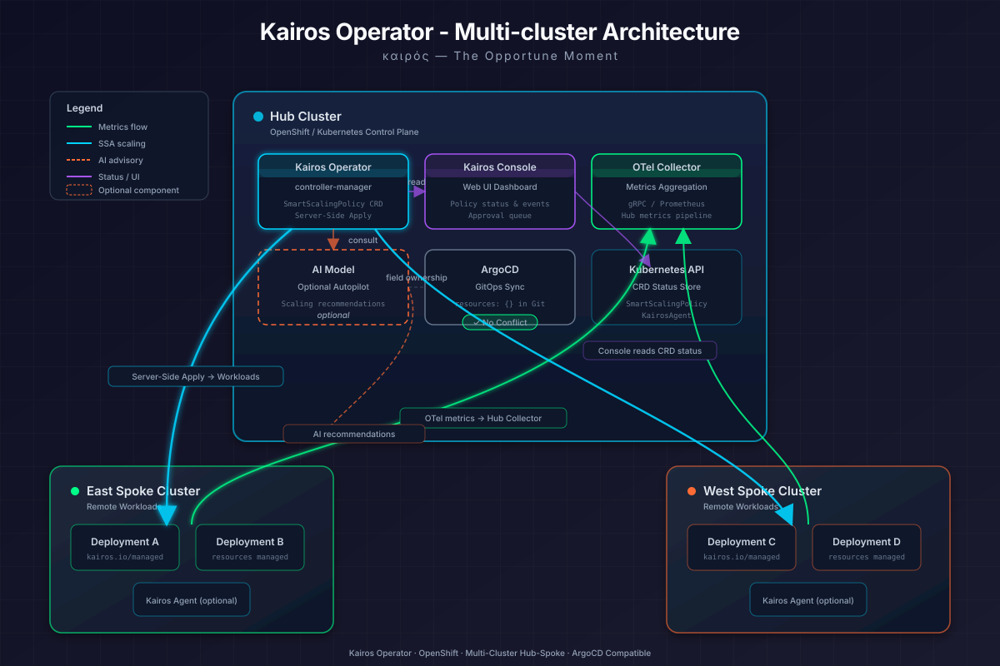
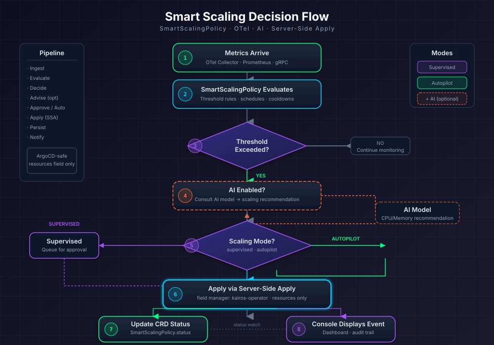
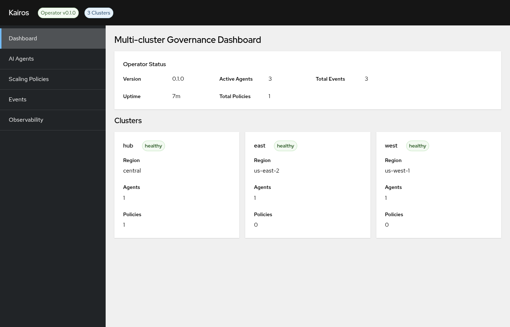
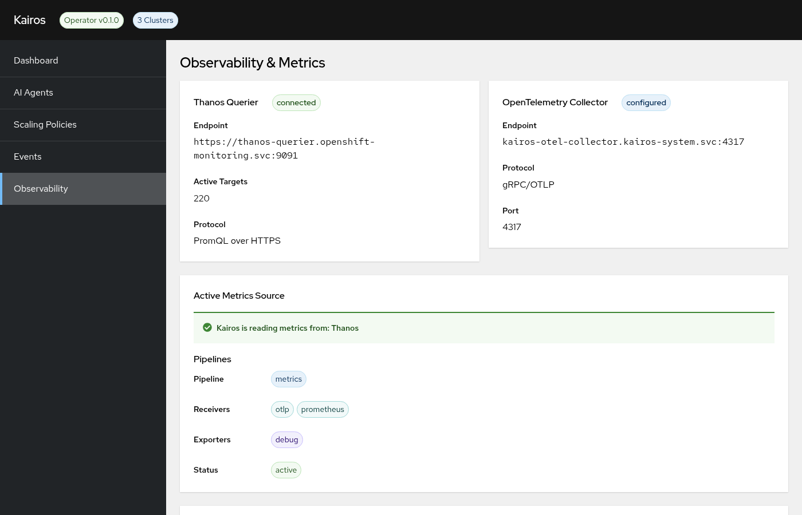

Metrics-Driven Scaling Decisions
Queries real CPU/memory usage from OpenTelemetry (OTLP gRPC), Thanos Querier, or Prometheus. No guessing — decisions are based on actual workload behavior over configurable time windows.
καιρός — The Opportune Moment
Stop over-provisioning. Stop under-provisioning. Let Kairos intelligently manage your OpenShift workload resources using real metrics, AI recommendations, and Server-Side Apply — across all your clusters, without conflicting with ArgoCD.
Kairos is a Kubernetes operator for OpenShift that automatically right-sizes workload resources
(CPU and memory requests/limits) based on real-time metrics from OpenTelemetry, Thanos, or Prometheus.
It eliminates the manual guesswork of setting resources: in your Deployments and StatefulSets,
replacing it with continuous, data-driven optimization.
Managing multiple OpenShift clusters (hub + spoke) who need standardized resource governance without manual intervention across dozens of namespaces.
Tired of OOMKilled pods, CPU throttling, and alert fatigue from poorly-sized workloads. Need data-driven resource decisions that adapt automatically.
Over-provisioned clusters waste cloud budget. Kairos right-sizes workloads to match actual usage, reducing waste while maintaining performance SLOs.
Queries real CPU/memory usage from OpenTelemetry (OTLP gRPC), Thanos Querier, or Prometheus. No guessing — decisions are based on actual workload behavior over configurable time windows.
Connect any OpenAI-compatible model (DeepSeek, Granite, Qwen, LLaMA via vLLM/LiteLLM/Ollama) for intelligent analysis of usage patterns. The AI considers seasonality, traffic spikes, and historical data to recommend optimal resource levels.
Kairos only owns the resources field via Kubernetes SSA. ArgoCD, Flux, or any GitOps tool continues to own all other fields. Zero sync conflicts, zero drift alerts.
PatternFly 5 dashboard running on the hub cluster showing agents, policies, events, managed resources, and observability status from all spoke clusters in a single unified view.
Rate-limited corrections (configurable per hour), cooldown periods between actions, automatic rollback if pods crash after resize, and dry-run mode for testing policies before enforcement.
Don't enumerate hundreds of namespaces. Define namespaceSuffix: "-prod" and the agent automatically discovers and manages ALL matching namespaces as they're created.

| 1. Annotate | Mark workloads with kairos.io/managed: "true" and leave resources: {} empty in your Git manifests |
| 2. Discover | KairosAgent scans namespaces (by suffix or explicit list) for annotated workloads every reconcile cycle |
| 3. Measure | Queries OTel/Thanos/Prometheus for actual CPU and memory usage over configurable time windows |
| 4. Decide | Evaluates SmartScalingPolicy rules. If AI is enabled, sends metrics context to the model for recommendation |
| 5. Apply | Uses Server-Side Apply with field manager kairos-operator — only touches resources. No other fields modified. |
| 6. Verify | Watches rollout health. If pods crash within cooldown and rollbackOnFailure: true, reverts immediately |
| 7. Report | Agent reports status + managed resources to hub console for centralized visibility |


resources: values during deploymentresources: {} empty — Kairos fills optimal values from real metrics*-prod namespaces automaticallyProblem: Each microservice has different resource needs that change during sales events, weekends, and overnight. The platform team spends 4+ hours/week manually adjusting limits after incidents.
Solution: Deploy one SmartScalingPolicy with metric rules + one KairosAgent with
namespaceSuffix: "-prod". Kairos continuously optimizes all 15 services across all clusters based on actual traffic.
Result: Zero OOMKills, 35% cost reduction, platform team reclaims 4+ hours/week.
Problem: Factory clusters have no internet access but workloads still need proper resource management. Teams can't SSH into each site to adjust resources.
Solution: Deploy Kairos in air-gapped mode (no AI) with hubReporting.tls.insecureSkipVerify: true
for internal CA certificates. Agents report to hub console over internal network.
Result: Centralized visibility of 50+ workloads across 5 factory sites, with automatic metric-based scaling.
Problem: Everything is in Git managed by ArgoCD. Any attempt to modify workloads externally causes "OutOfSync" status and either gets reverted by ArgoCD or creates permanent drift.
Solution: Kairos uses Server-Side Apply with its own field manager. ArgoCD is configured with
ignoreDifferences on the resources field. Git manifests have resources: {} — this IS the desired state.
Result: ArgoCD always shows "Synced". Kairos manages resources independently. Both controllers coexist.
| Feature | Kubernetes VPA | Kairos |
|---|---|---|
| Multi-cluster | Single cluster only | Hub + unlimited spoke clusters |
| ArgoCD safe | No — causes sync conflicts | Yes — SSA field ownership |
| AI-powered | No | Optional: DeepSeek, Granite, Qwen, LLaMA |
| Namespace patterns | Per-workload only | Suffix-based discovery (*-prod) |
| Governance console | No | PatternFly 5 multi-cluster dashboard |
| Rollback on failure | Limited | Automatic with configurable cooldown |
| OpenTelemetry native | No | Primary metrics source via OTLP gRPC |
| Rate limiting | Basic | maxActionsPerHour + per-workload cooldown |
| Observability | Prometheus metrics only | OTel + Thanos + Prometheus + Console UI |
| Hub | Console queries local Kubernetes API for kairos.io/managed: "true" annotated workloads |
| Spoke Agents | Each KairosAgent periodically POSTs to /api/v1/agent-report on the hub console with: agent status, events, and managed resource inventory |
| Console | Combines hub-local + all spoke reports into a unified multi-cluster view with filtering by cluster |
| Security | Agent-to-hub communication uses TLS (configurable: full verification, custom CA, or insecureSkipVerify for air-gapped) |
| Cluster | Role | Components | Agent Mode |
|---|---|---|---|
hub | Control plane | Operator + Console + Thanos Querier + OTel | supervised |
east | Workload | Operator + Prometheus + Agent | autopilot |
west | Workload | Operator + Prometheus + Agent | autopilot |
Instead of maintaining static namespace lists, agents dynamically discover namespaces by suffix pattern:
apiVersion: kairos.maximilianopizarro.github.io/v1alpha1
kind: KairosAgent
metadata:
name: prod-agent
spec:
mode: autopilot
watch:
namespaceSuffix: "-prod" # Watches ALL *-prod namespaces automatically
resourceTypes:
- Deployment
- StatefulSet-prod to have consistent resource limits (e.g., guaranteed CPU/memory) without manually editing each one. Kairos enforces this via SmartScalingPolicy + KairosAgent.
Create a policy that sets baseline resource requests and limits for any workload that has resources: {}:
apiVersion: kairos.maximilianopizarro.github.io/v1alpha1
kind: SmartScalingPolicy
metadata:
name: prod-standard-limits
namespace: kairos-system
spec:
target:
apiVersion: apps/v1
kind: Deployment
name: "*" # Wildcard — applies to ALL deployments
namespace: "*-prod" # Pattern — all namespaces ending in -prod
prometheusEndpoint: "https://thanos-querier.openshift-monitoring.svc:9091"
# Default resource baseline (applied immediately to workloads with resources: {})
defaultResources:
requests:
cpu: "100m"
memory: "128Mi"
limits:
cpu: "500m"
memory: "512Mi"
# Dynamic rules — adjust limits based on real metrics
rules:
- name: cpu-high-scale-up
when:
metric: "rate(container_cpu_usage_seconds_total{namespace=~\".*-prod\"}[5m])"
operator: GreaterThan
threshold: "0.8"
action:
type: SetResources
resources:
requests:
cpu: "250m"
memory: "256Mi"
limits:
cpu: "1000m"
memory: "1Gi"
- name: memory-pressure
when:
metric: "container_memory_working_set_bytes{namespace=~\".*-prod\"}"
operator: GreaterThan
threshold: "402653184" # 384Mi
action:
type: SetResources
resources:
requests:
memory: "384Mi"
limits:
memory: "1Gi"
- name: low-usage-scale-down
when:
metric: "rate(container_cpu_usage_seconds_total{namespace=~\".*-prod\"}[15m])"
operator: LessThan
threshold: "0.1"
action:
type: SetResources
resources:
requests:
cpu: "50m"
memory: "64Mi"
limits:
cpu: "200m"
memory: "256Mi"The agent discovers all namespaces ending in -prod and applies the policy to annotated workloads:
apiVersion: kairos.maximilianopizarro.github.io/v1alpha1
kind: KairosAgent
metadata:
name: prod-limits-agent
namespace: kairos-system
spec:
mode: autopilot
aiModel:
apiURL: "https://litellm-prod.apps.maas.redhatworkshops.io/v1/chat/completions"
model: "deepseek-r1-distill-qwen-14b"
secretRef:
name: kairos-ai-credentials
key: api-key
watch:
namespaceSuffix: "-prod"
resourceTypes:
- Deployment
- StatefulSet
correctionPolicy:
maxActionsPerHour: 20
rollbackOnFailure: true
cooldownPeriod: "3m"
hubReporting:
enabled: true
endpoint: "https://kairos-console.apps.hub-cluster.example.com"
reporting:
interval: "5m"In your Git manifests (managed by ArgoCD or direct apply), mark workloads for Kairos management:
# Example: payment service in "ecommerce-prod"
apiVersion: apps/v1
kind: Deployment
metadata:
name: payment-service
namespace: ecommerce-prod
annotations:
kairos.io/managed: "true"
kairos.io/policy: "prod-standard-limits"
spec:
replicas: 2
template:
spec:
containers:
- name: payment
image: quay.io/myorg/payment-service:v2.3.1
resources: {} # Empty! Kairos fills this via SSA# Check what Kairos set on the workload
oc get deployment payment-service -n ecommerce-prod \
-o jsonpath='{.spec.template.spec.containers[0].resources}' | jq .
{
"requests": { "cpu": "100m", "memory": "128Mi" },
"limits": { "cpu": "500m", "memory": "512Mi" }
}
# Check agent status
oc get kairosagents -n kairos-system
NAME MODE PHASE WATCHED CORRECTIONS
prod-limits-agent autopilot Active 24 5
# View correction events
oc get events -n kairos-system --field-selector reason=ResourcesApplied| Suffix | Example Namespaces | Typical Limits |
|---|---|---|
-dev | app-dev, api-dev, web-dev | cpu: 50m/200m, mem: 64Mi/256Mi |
-test | app-test, integration-test | cpu: 100m/500m, mem: 128Mi/512Mi |
-qa | app-qa, regression-qa | cpu: 100m/500m, mem: 128Mi/512Mi |
-prod | app-prod, billing-prod, api-prod | cpu: 200m/1000m, mem: 256Mi/1Gi |
SmartScalingPolicy per environment tier (dev, test, prod) with appropriate default limits, and one KairosAgent per suffix. This gives you centralized governance with environment-specific tuning.
apiVersion: kairos.maximilianopizarro.github.io/v1alpha1
kind: KairosAgent
metadata:
name: metrics-only-agent
spec:
mode: supervised # Human reviews before applying
aiModel:
apiURL: "" # Empty = AI disabled
watch:
namespaces: [ecommerce-prod, billing-prod, payments-prod]
resourceTypes: [Deployment, StatefulSet]
correctionPolicy:
maxActionsPerHour: 5
rollbackOnFailure: true
reporting:
interval: "10m"apiVersion: kairos.maximilianopizarro.github.io/v1alpha1
kind: KairosAgent
metadata:
name: ai-autopilot-agent
spec:
mode: autopilot
aiModel:
apiURL: "https://litellm.apps.maas.example.com/v1/chat/completions"
model: "deepseek-r1-distill-qwen-14b"
secretRef: { name: kairos-ai-credentials, key: api-key }
tls:
insecureSkipVerify: false
watch:
namespaceSuffix: "-prod"
resourceTypes: [Deployment, StatefulSet]
correctionPolicy:
maxActionsPerHour: 20
rollbackOnFailure: true
hubReporting:
enabled: true
endpoint: "https://kairos-console.apps.hub-cluster.example.com"
reporting:
interval: "5m"apiVersion: kairos.maximilianopizarro.github.io/v1alpha1
kind: KairosAgent
metadata:
name: hybrid-agent
spec:
mode: supervised
aiModel:
apiURL: "http://vllm.ai-system.svc:8000/v1/chat/completions"
model: "granite-3b-code"
tls:
insecureSkipVerify: true
watch:
namespaces: [core-banking-prod, fraud-detection-prod]
namespaceSuffix: "-staging"
resourceTypes: [Deployment, StatefulSet]
labelSelector: "kairos.io/managed=true"
correctionPolicy:
maxActionsPerHour: 10
requireApprovalAbove: "50%"
rollbackOnFailure: true
hubReporting:
enabled: true
endpoint: "https://kairos-console.apps.hub.example.com"
tokenSecretRef: { name: hub-reporting-token, key: token }
reporting:
interval: "5m"apiVersion: kairos.maximilianopizarro.github.io/v1alpha1
kind: KairosAgent
metadata:
name: airgapped-agent
spec:
mode: autopilot
aiModel:
apiURL: "" # No AI in disconnected mode
watch:
namespaces: [factory-floor-prod, scada-prod, plc-monitoring-prod]
resourceTypes: [Deployment]
correctionPolicy:
maxActionsPerHour: 5
rollbackOnFailure: true
hubReporting:
enabled: true
endpoint: "https://kairos-console.apps.hub.internal:8443"
tls:
insecureSkipVerify: true # Self-signed certs in air-gapped
caSecretRef: { name: internal-ca-bundle, key: ca.crt }
reporting:
interval: "15m"| Mode | AI | Namespace Selection | TLS | Best For |
|---|---|---|---|---|
| A | No | Explicit list | Standard | Simple metric-based scaling, few namespaces |
| B | Yes (autopilot) | Suffix pattern | Configurable | Large environments with many -prod namespaces |
| C | Yes (supervised) | Combined | mTLS/token | Critical workloads + dynamic discovery |
| D | No | Explicit list | InsecureSkipVerify | Disconnected / air-gapped / industrial edge |
apiVersion: kairos.maximilianopizarro.github.io/v1alpha1
kind: KairosConsole
metadata:
name: kairos
spec:
replicas: 1
route:
enabled: true
host: "kairos-console.apps.your-cluster.example.com"
tlsEnabled: true
auth:
type: none
clusters:
- name: hub
region: us-east-1
apiURL: "https://api.hub-cluster:6443"
- name: east
region: us-east-2
apiURL: "https://api.east-cluster:6443"
- name: west
region: us-west-1
apiURL: "https://api.west-cluster:6443"/api/v1/agent-report endpoint.
On each cluster (hub, east, west), run:
# Install CRDs + operator on each cluster
make install
make deploy IMG=quay.io/maximilianopizarro/kairos-operator:v2.0.0The hub needs the Console + a KairosAgent for local monitoring:
# --- KairosConsole (hub only) ---
apiVersion: kairos.maximilianopizarro.github.io/v1alpha1
kind: KairosConsole
metadata:
name: kairos
namespace: kairos-system
spec:
replicas: 1
image: "quay.io/maximilianopizarro/kairos-console:v2.0.0"
route:
enabled: true
# If host is empty, OpenShift auto-assigns a wildcard route
host: "kairos-console.apps.your-hub-cluster.example.com"
tlsEnabled: true
auth:
type: none # or openshift-oauth for production
clusters:
- name: hub
region: central
apiURL: "https://api.hub-cluster:6443"
- name: east
region: us-east-2
apiURL: "https://api.east-cluster:6443"
- name: west
region: us-west-1
apiURL: "https://api.west-cluster:6443"
---
# --- Hub KairosAgent (monitors local workloads) ---
apiVersion: kairos.maximilianopizarro.github.io/v1alpha1
kind: KairosAgent
metadata:
name: hub-agent
namespace: kairos-system
spec:
mode: supervised
aiModel:
provider: "none"
endpoint: "http://localhost:8000"
apiURL: "http://localhost:8000"
model: "none"
watch:
namespaces:
- kairos-system
resourceTypes:
- Deployment
- StatefulSet
correctionPolicy:
autoApply: false
requireApproval: true
maxScalePercent: 50
maxActionsPerHour: 10
reporting:
interval: "5m"
destination: consoleThen grant RBAC to the console ServiceAccount:
# Allow the console to query managed resources across all namespaces
oc create clusterrole kairos-console-resources \
--verb=get,list,watch \
--resource=deployments.apps,statefulsets.apps,namespaces
oc create clusterrolebinding kairos-console-resources-binding \
--clusterrole=kairos-console-resources \
--serviceaccount=kairos-system:kairos-console
# Allow Thanos metrics access
oc create clusterrolebinding kairos-console-monitoring \
--clusterrole=cluster-monitoring-view \
--serviceaccount=kairos-system:kairos-consoleEach spoke cluster needs a KairosAgent that reports to the hub console:
# --- Spoke Agent (deploy on EAST cluster) ---
apiVersion: kairos.maximilianopizarro.github.io/v1alpha1
kind: KairosAgent
metadata:
name: east-agent
namespace: kairos-system
spec:
mode: supervised # or "autopilot" for auto-corrections
aiModel:
provider: "none" # "openai" to enable AI
endpoint: "http://localhost:8000"
apiURL: "http://localhost:8000"
model: "none"
watch:
namespaces: # Explicit namespace list
- app-prod
- api-prod
- payments-prod
# OR use dynamic discovery:
# namespaceSuffix: "-prod"
resourceTypes:
- Deployment
- StatefulSet
correctionPolicy:
autoApply: false
requireApproval: true
maxScalePercent: 50
maxActionsPerHour: 10
reporting:
interval: "5m"
destination: console
# THIS IS THE KEY: report back to the hub console
hubReporting:
enabled: true
endpoint: "https://kairos-console.apps.your-hub-cluster.example.com"
clusterName: "east"
insecureSkipVerify: true # Set to false in production with proper CAendpoint: The full URL of the hub console (must be reachable from the spoke cluster)clusterName: How this cluster appears in the console (e.g., "east", "west", "prod-us")insecureSkipVerify: Set to true for self-signed certs / air-gapped environmentstokenSecretRef (optional): Bearer token secret for auth if hub console requires itMark Deployments/StatefulSets on spoke clusters that Kairos should manage and report:
# On the EAST cluster:
oc annotate deployment my-api -n app-prod kairos.io/managed="true"
oc annotate deployment web-frontend -n app-prod kairos.io/managed="true"
oc annotate deployment payment-service -n payments-prod kairos.io/managed="true"
oc annotate deployment worker -n api-prod kairos.io/managed="true"
oc annotate deployment cache -n api-prod kairos.io/managed="true"# On each cluster, verify agents:
oc get kairosagent -n kairos-system
NAME MODE PHASE CORRECTIONS
east-agent supervised Active 0
# From the hub, verify console shows all clusters:
curl -sk https://kairos-console.apps.hub.example.com/api/v1/agents | jq '.[].cluster'
"hub"
"east"
"west"
# Verify managed resources (multi-cluster view):
curl -sk https://kairos-console.apps.hub.example.com/api/v1/managed-resources | jq '.[].cluster' | sort | uniq -c
1 "hub"
5 "east"
5 "west"| Direction | Protocol | Endpoint | Data |
|---|---|---|---|
| Spoke → Hub | HTTPS POST | /api/v1/agent-report | Agent status, events, managed resources list |
| Hub → Local API | HTTPS (in-cluster) | Kubernetes API | Local annotated deployments/statefulsets |
| Console → Browser | HTTPS | /api/v1/managed-resources | Aggregated: local + all spoke reports |
# For environments without valid TLS certificates:
spec:
hubReporting:
enabled: true
endpoint: "https://kairos-console.internal.local:8443"
clusterName: "factory-floor"
insecureSkipVerify: true # ← Disables TLS verification
# For AI model connections in disconnected environments:
spec:
aiModel:
provider: "openai"
apiURL: "https://local-vllm.internal:8000/v1/chat/completions"
model: "granite-3.1-8b"
tls:
insecureSkipVerify: true # ← Disables TLS for AI endpoint| Priority | Source | Protocol | Port | Use Case |
|---|---|---|---|---|
| 1 | OpenTelemetry | gRPC/OTLP | 4317 | Primary — lowest latency, push-based |
| 2 | Thanos Querier | PromQL/HTTPS | 9091 | Federated multi-cluster metrics (OpenShift built-in) |
| 3 | Prometheus | PromQL/HTTP | 9090 | Single-cluster fallback |
apiVersion: opentelemetry.io/v1beta1
kind: OpenTelemetryCollector
metadata:
name: kairos-otel
namespace: kairos-system
spec:
mode: deployment
config:
receivers:
otlp:
protocols:
grpc:
endpoint: 0.0.0.0:4317
prometheus:
config:
scrape_configs:
- job_name: thanos-federated
scrape_interval: 30s
scheme: https
tls_config:
insecure_skip_verify: true
bearer_token_file: /var/run/secrets/kubernetes.io/serviceaccount/token
static_configs:
- targets: ['thanos-querier.openshift-monitoring.svc:9091']
exporters:
debug: {}
service:
pipelines:
metrics:
receivers: [otlp, prometheus]
exporters: [debug]openshift-monitoring. No additional installation required — just reference the endpoint in your SmartScalingPolicy.
apiVersion: kairos.maximilianopizarro.github.io/v1alpha1
kind: SmartScalingPolicy
metadata:
name: my-policy
spec:
target:
apiVersion: apps/v1
kind: Deployment
name: my-app
namespace: my-namespace
prometheusEndpoint: "https://thanos-querier.openshift-monitoring.svc:9091"
rules:
- name: cpu-high
when:
metric: "container_cpu_usage_seconds_total"
operator: GreaterThan
threshold: "0.8"
action:
type: SetResources
resources:
requests:
cpu: "200m"
memory: "256Mi"
- name: memory-high
when:
metric: "container_memory_working_set_bytes"
operator: GreaterThan
threshold: "512000000"
action:
type: SetResources
resources:
requests:
memory: "256Mi"
cpu: "200m"
The Kairos Console includes a dedicated Observability tab that shows:
| Endpoint | thanos-querier.openshift-monitoring.svc:9091 |
| Status | connected |
| Active Targets | 220 |
| Protocol | PromQL over HTTPS |
| Endpoint | kairos-otel-collector.kairos-system.svc:4317 |
| Status | configured |
| Protocol | gRPC/OTLP |
| Port | 4317 |
When enabled, the AI model receives:
It responds with a recommended resource configuration and confidence level. In autopilot mode,
recommendations above the confidence threshold are applied automatically. In supervised mode,
they're logged as events for human review.
| Platform | Protocol | Example URL | Models |
|---|---|---|---|
| LiteLLM | OpenAI-compatible | https://litellm.example.com/v1/chat/completions | Any model via proxy |
| vLLM | OpenAI-compatible | http://vllm-svc:8000/v1/chat/completions | DeepSeek, Qwen, LLaMA |
| KServe | OpenAI-compatible | https://model.kserve.example.com/v1/chat/completions | Granite, DeepSeek |
| Ollama | OpenAI-compatible | http://ollama:11434/v1/chat/completions | Any local model |
# 1. Create the credentials secret
oc create secret generic kairos-ai-credentials \
-n kairos-system \
--from-literal=api-key=<your-api-key>
# 2. Reference in the KairosAgent spec
spec:
aiModel:
apiURL: "https://litellm-prod.apps.maas.redhatworkshops.io/v1/chat/completions"
model: "deepseek-r1-distill-qwen-14b"
secretRef:
name: kairos-ai-credentials
key: api-key
tls:
insecureSkipVerify: false # Set true for self-signed certsAI recommendations are applied automatically. Rate-limited by maxActionsPerHour and
protected by rollbackOnFailure. Best for non-critical workloads or high-confidence environments.
AI recommendations are logged as events but NOT applied. A human reviews recommendations in the console
or via oc get events and decides whether to apply. Best for production-critical services.
resources field — ArgoCD continues to own everything else.
Kubernetes Server-Side Apply tracks which controller owns which field. When Kairos applies resources with
field manager kairos-operator, Kubernetes knows that field is owned by Kairos, not ArgoCD.
ArgoCD sees the field as "managed by another controller" and (with ignoreDifferences) does not revert it.
# In your Git-managed manifests, leave resources empty:
apiVersion: apps/v1
kind: Deployment
metadata:
name: my-service
annotations:
kairos.io/managed: "true"
spec:
template:
spec:
containers:
- name: app
image: my-image:latest
resources: {} # ← Kairos manages this via SSAapiVersion: argoproj.io/v1alpha1
kind: Application
metadata:
name: my-app
spec:
ignoreDifferences:
- group: apps
kind: Deployment
jqPathExpressions:
- .spec.template.spec.containers[].resources| Kairos | Owns .spec.template.spec.containers[].resources via SSA field manager kairos-operator |
| ArgoCD | Owns all other fields. Ignores differences on resources field. |
| Git | Contains resources: {} — this IS the desired state ("let Kairos manage it") |
| Result | Always "Synced" in ArgoCD. No drift alerts. Both controllers coexist. |
| Mode | spec.auth.type | Description | When to Use |
|---|---|---|---|
| None | none | No authentication — open access | Development, initial setup, internal networks |
| OpenShift OAuth | openshift-oauth | OpenShift built-in OAuth server + proxy sidecar | Production on OpenShift (recommended) |
| Token | token | Static bearer token | Air-gapped environments |
Uses the ose-oauth-proxy sidecar — the same mechanism Kiali, Grafana, and other OpenShift-integrated UIs use.
Users authenticate via the OpenShift login page and must have cluster-admin (or configured role) to access.
┌─────────────────────────────────────────────────────────────┐
│ Kairos Console Pod │
│ │
│ ┌───────────────┐ ┌──────────────────────┐ │
│ │ oauth-proxy │ ──────▶ │ console (Go+React) │ │
│ │ :8443 (HTTPS) │ proxy │ :8080 (HTTP) │ │
│ └───────┬───────┘ └──────────────────────┘ │
│ │ │
└──────────┼───────────────────────────────────────────────────┘
│
▼
OpenShift OAuth Server (built-in)
│
▼
User logs in with OpenShift credentials
(cluster-admin role verified)apiVersion: kairos.maximilianopizarro.github.io/v1alpha1
kind: KairosConsole
metadata:
name: kairos
namespace: kairos-system
spec:
replicas: 1
image: "quay.io/maximilianopizarro/kairos-console:latest"
route:
enabled: true
host: "kairos-console.apps.your-cluster.example.com"
tlsEnabled: true
auth:
type: openshift-oauth
oauth:
requiredRole: "cluster-admin" # Only cluster-admins can access
httpsPort: 8443| 1. ServiceAccount annotation | Registers the SA as an OAuth client with OpenShift |
| 2. Service annotation | service.beta.openshift.io/serving-cert-secret-name → auto-generates TLS cert |
| 3. Cookie secret | Session encryption for the OAuth proxy |
| 4. oauth-proxy sidecar | Terminates TLS, authenticates via OAuth, checks role, proxies to console |
# Patch the existing KairosConsole CR
oc patch kairosconsole kairos -n kairos-system --type='merge' -p '{
"spec": {
"auth": {
"type": "openshift-oauth",
"oauth": {
"requiredRole": "cluster-admin"
}
}
}
}'
# The operator automatically handles all OAuth setup.
# Next access to the console URL will redirect to OpenShift login.| Role | Who Has It | Access Level |
|---|---|---|
cluster-admin | Cluster administrators | Full access (default, most restrictive) |
admin | Namespace administrators | Project-level admin |
cluster-monitoring-view | Monitoring users | Read-only monitoring |
view | Any authenticated user | Read-only (least restrictive) |
oc patch kairosconsole kairos -n kairos-system --type='merge' -p '{
"spec": { "auth": { "type": "none" } }
}'# Check oauth-proxy sidecar logs
oc logs deployment/kairos-console -n kairos-system -c oauth-proxy
# Verify ServiceAccount has OAuth annotations
oc get sa kairos-console -n kairos-system -o yaml | grep oauth
# Check TLS secret was auto-generated by OpenShift service-ca
oc get secret kairos-console-tls -n kairos-system
# Test the Route (should redirect to OpenShift login)
curl -Ik https://kairos-console.apps.your-cluster.example.com
# Expected: HTTP/1.1 302 → Location: .../oauth/authorize# 1. Install CRDs
oc apply -f config/crd/bases/
# 2. Create namespace and deploy the operator
make deploy IMG=quay.io/maximilianopizarro/kairos-operator:v2.0.0
# 3. Create AI credentials (optional — skip for metric-only mode)
oc create secret generic kairos-ai-credentials \
-n kairos-system --from-literal=api-key=<your-key>
# 4. Deploy an agent
oc apply -f config/samples/kairos_v1alpha1_kairosagent.yaml
# 5. Deploy the governance console
oc apply -f config/samples/kairos_v1alpha1_kairosconsole.yaml
# 6. Get the console URL
oc get route kairos-console -n kairos-system -o jsonpath='{.spec.host}'# Check operator is running
oc get pods -n kairos-system
NAME READY STATUS RESTARTS AGE
kairos-controller-manager-xxx-yyy 1/1 Running 0 2m
kairos-console-xxx-yyy 1/1 Running 0 1m
# Check CRDs are installed
oc get crd | grep kairos
kairosagents.kairos.maximilianopizarro.github.io 2026-05-27T...
kairosconsoles.kairos.maximilianopizarro.github.io 2026-05-27T...
smartscalingpolicies.kairos.maximilianopizarro.github.io 2026-05-27T...
# Check agent status
oc get kairosagents -n kairos-system| Image | Purpose | Base | Registry |
|---|---|---|---|
kairos-operator | Controller manager | UBI9 Micro | quay.io + ghcr.io |
kairos-console | Governance dashboard | UBI9 Micro | quay.io + ghcr.io |
Defines metric-based and schedule-based scaling rules for workloads.
target | Workload reference (kind, name, namespace) |
otelEndpoint | OTel gRPC address |
prometheusEndpoint | Thanos/Prometheus URL |
defaultResources | Baseline for empty resources |
rules[] | Metric conditions + actions |
schedule[] | Cron-based scaling |
metricsTLS | TLS config for metrics endpoints |
paused | Disable all actions |
AI-powered autonomous optimization agent that watches and manages workloads.
mode | autopilot / supervised |
aiModel | API URL + model + secret + TLS |
watch | Namespaces + suffix + types + labels |
correctionPolicy | Rate limits + rollback + dryRun |
hubReporting | Push status to hub console |
reporting | Interval + OTel export |
Multi-cluster governance dashboard with unified resource view.
replicas | Pod count |
image | Container image override |
route | OpenShift Route config |
auth | Authentication type |
clusters[] | Managed cluster refs + TLS |
dryRun: true to see what Kairos would change without actually modifying any workload.
Recommendations appear in the agent's .status.dryRunRecommendations and in the console Events page.
apiVersion: kairos.maximilianopizarro.github.io/v1alpha1
kind: KairosAgent
metadata:
name: prod-agent
namespace: kairos-system
spec:
mode: autopilot
correctionPolicy:
dryRun: true # ← Recommendations only, no changes applied
maxActionsPerHour: 20
rollbackOnFailure: true
# ... rest of specTo view dry-run recommendations:
# View recommendations in agent status
oc get kairosagent prod-agent -n kairos-system -o jsonpath='{.status.dryRunRecommendations}' | jq .
# List agents showing DryRun column
oc get kairosagents -n kairos-system
NAME MODE DRYRUN PHASE CORRECTIONS AGE
prod-agent autopilot true Active 0 5mapiVersion: rbac.authorization.k8s.io/v1
kind: ClusterRole
metadata:
name: kairos-spoke-minimum
rules:
- apiGroups: ["apps"]
resources: ["deployments", "statefulsets"]
verbs: ["get", "list", "watch", "patch"]
- apiGroups: [""]
resources: ["namespaces"]
verbs: ["get", "list", "watch"]
- apiGroups: ["kairos.maximilianopizarro.github.io"]
resources: ["*"]
verbs: ["*"]| ClusterRole | Purpose |
|---|---|
kairos-console-resources | get, list, watch on deployments, statefulsets, namespaces |
cluster-monitoring-view | Query Thanos/Prometheus metrics |
system:auth-delegator | Only when OAuth enabled |
The operator exposes Prometheus metrics at :8443/metrics:
| Metric | Type | Description |
|---|---|---|
controller_runtime_reconcile_total | Counter | Reconciliations per controller |
controller_runtime_reconcile_errors_total | Counter | Reconciliation errors |
controller_runtime_reconcile_time_seconds | Histogram | Reconciliation latency |
workqueue_depth | Gauge | Queue depth |
# ServiceMonitor for OpenShift Prometheus
apiVersion: monitoring.coreos.com/v1
kind: ServiceMonitor
metadata:
name: kairos-operator
namespace: kairos-system
spec:
selector:
matchLabels:
control-plane: controller-manager
endpoints:
- port: https
scheme: https
bearerTokenFile: /var/run/secrets/kubernetes.io/serviceaccount/token
tlsConfig:
insecureSkipVerify: true| Controller | Manages | Kairos Behavior |
|---|---|---|
| HPA / KEDA | spec.replicas | No conflict — Kairos only manages resources |
| VPA | resources.requests | ⚠️ Conflict — disable VPA or set Kairos dryRun: true |
| ArgoCD | Full manifest | No conflict — uses ignoreDifferences + SSA |